검색 결과 집합과 민감도·정밀도
체계적 문헌고찰의 검색은 관련 문헌을 놓치지 않는 것, 곧 민감도를 먼저 겨냥한다. 찾은 결과 가운데 관련 문헌이 차지하는 비율은 정밀도이다. 검색 단계에서는 민감도를 높이고, 늘어나는 잡음은 선별에서 걸러 낸다.
아래 화면은 같은 RISS에서 검색 조건을 달리하면 결과 규모가 얼마나 다를 수 있는지 보여 준다. 통합검색창에 달 기지를 넣으면 2026-10-13 촬영 시점에 전체 1,559건이 나왔다. 단행본이 1,090건으로 대부분이고, 학위논문 결과에는 공군기지 같은 잡음이 섞여 있었다.
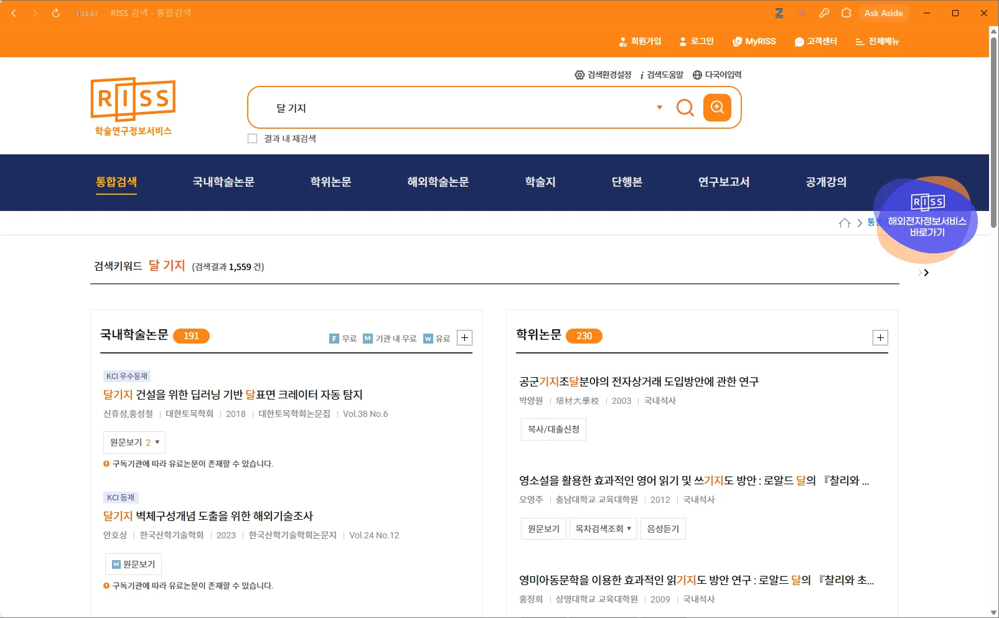
- 검색창에 '달 기지' 입력
- 검색결과 1,559건
- 국내학술논문 191건
- 학위논문 230건
같은 날 상세검색에서 자료 유형을 국내학술논문(결과 화면 제목에는 ‘국내학술지논문’으로 표시된다)으로 고르고 논문명 달기지, 주제어 건설을 AND로 이으면 14건이 나왔다. 두 건수를 곧바로 견주어 "상세검색이 낫다"고 말할 수는 없다.
달 기지와 달기지), 검색어(건설 추가), 검색 필드(전체와 논문명·주제어), 자료 유형(전체와 국내학술논문)이 동시에 달랐다. 조건을 여러 개 바꾸면 규모가 크게 달라진다는 것까지만 말할 수 있다. 무엇이 영향을 주었는지는 한 번에 하나씩 바꿔 확인한다.검색어를 좁히면 정밀도는 오르지만 관련 문헌을 놓칠 위험이 커지고, 동의어를 넓히면 놓치는 문헌은 줄지만 읽을 레코드가 늘어난다. 어디서 멈출지는 연구질문의 성격과 선별 인력으로 정해 프로토콜에 적고, 건수를 본 뒤에 바꾸지 않는다. 건수가 많아 보여서 검색어를 줄이면 검색식이 질문이 아니라 결과의 크기에 맞춰진다. 또 하나의 DB만으로는 적격 문헌을 놓칠 위험이 커서 보통 둘 이상을 검색한다(Higgins et al., 2024, 4장).
이 장의 RISS 화면은 상세검색 사용법을 보여 주는 시연용이며 3.2의 개념 블록에서 나온 식이 아니다. 흐름도의 식별 건수에는 연구질문의 검색식으로 실행한 DB별 건수만 쓴다. 이 RISS 14건은 사용법 연습 값이다. 화면 기능 설명은 2026-10-13 촬영 시점의 화면 기준이다.
개념 블록과 검색식 조립
검색식은 연구질문에서 개념을 뽑는 데서 시작한다. 시연 질문의 개념은 '달 기지'와 '환경' 둘이다. 각 개념을 한 덩어리(블록)로 보고, 그 개념을 가리키는 말을 최대한 모아 OR로 묶는다.
동의어 확장이 첫 작업이다. 같은 대상을 lunar base, lunar habitat, lunar outpost처럼 여러 말로 쓰기 때문이다. 실제 연구에서는 moon 계열 표현도 후보가 된다. lunar surface habitat처럼 구문 사이에 다른 단어가 끼는 표현은 "lunar habitat*"에 걸리지 않는다. 근접 연산자(예: NEAR/n)가 있는 DB도 있으니 화면에서 확인한다.
'환경' 블록의 environment*, radiation, regolith는 상위어와 하위 사례를 섞은 구성이다. 열(thermal), 진공(vacuum), 먼지(dust), 미소운석(micrometeoroid) 같은 요인은 시연식에 없다. 질문이 환경 요인 전반을 묻는다면 이런 하위 요인을 보태야 민감도가 올라간다. 아래 조립기에서 개념별 동의어를 눌러 보며 식이 만들어지는 과정을 확인한다.
| 개념 | 한글 | 영문 |
|---|---|---|
| 달 기지 | 달기지, 달 기지 | "lunar habitat*", "lunar base*", "lunar outpost*" |
| 환경 | 환경, 방사선, 월면토 | environment*, radiation, regolith |
국문 블록도 같은 방식으로 넓힌다. 달 기지 블록에는 '월면 기지', '달 거주 시설', '달 표면 기지'를, 환경 블록에는 '열', '진공', '분진', '미소운석'을 후보로 둔다. 후보는 예비 검색에서 찾은 논문의 국문 주제어로 확인한다.
TS=(("lunar habitat*" OR "lunar base*" OR "lunar outpost*") AND (environment* OR radiation OR regolith))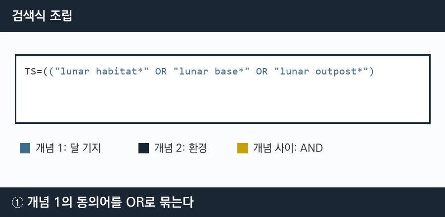
같은 개념 안의 말은 OR, 서로 다른 개념은 AND로 잇고, 전체를 필드 태그 TS=로 감싼다.
국문식과 영문식은 각각 만들고 국내 DB에서도 영문식을 시험해 본다. DB마다 색인하는 언어가 다르므로 단정하지 않는다. 일부 DB에는 통제어휘(시소러스)가 있어 DB가 정한 표준어로 같은 개념을 찾을 수 있다. 저자가 쓴 말인 자유어와 함께 쓰는 것이 일반적이지만 DB마다 다르다.
식을 만들었으면 검증 단계를 거친다. 이미 아는 핵심 문헌 몇 편(예: 3~5편 정도, 정해진 기준은 아니다)이 결과에 들어 있는지 확인한다. 이는 간단한 점검일 뿐 그것만으로 충분하지는 않다(Higgins et al., 2024, 4.4.11). 빠진 편이 있으면 그 논문의 용어를 동의어에 보태 다시 검색하고, 늘어난 잡음이 감당할 수준인지 본다. 핵심 문헌을 정한 방법도 적는다. 아는 문헌만으로 검증하면 닮은 연구에 편향된 식이 될 수 있다. 검색식은 동료에게 검토받는 것이 좋으며, 지침으로 PRESS가 알려져 있다(McGowan et al., 2016).
불리언·절단어·필드
AND는 두 조건을 모두 만족하는 문헌만 남기므로 결과가 줄거나 같고, OR는 둘 중 하나만 만족해도 포함하므로 늘거나 같다. NOT은 A에서 B가 든 것을 빼는데 필요한 문헌까지 빠질 수 있어 조심해서 쓴다.
A AND B여러 연산자를 한 식에 쓸 때는 OR 묶음을 항상 괄호로 감싼다. DB마다 우선순위가 다를 수 있고, 이 교재는 그 순서를 공식 문서에서 확인하지 못했다. 괄호는 우선순위와 상관없이 의도를 고정해 준다. 앞 절의 시연식이 (... OR ... OR ...) AND (... OR ... OR ...) 꼴인 이유이다.
절단 기호 *는 0개 이상의 문자를 대신한다. 그래서 habitat*은 habitat, habitats뿐 아니라 habitation도 찾는다. 민감도는 오르지만 잡음도 늘어난다. 따옴표로 묶은 구문은 적은 순서대로 이웃해 있는 것만 찾는다. 따옴표 없이 lunar habitat*처럼 띄어 쓰면 두 단어를 AND로 처리하는 DB가 있다(보조 자료에서 확인한 서술). 구문 안의 * 동작과 함께 화면에서 시험해 확인한다. 필드 태그와 함께 쓴 예는 TS=("lunar habitat*")로 적는다.
| 기호 | 의미 | 예 |
|---|---|---|
* | 0개 이상의 문자(어근 뒤 확장) | habitat* → habitat, habitats, habitation |
" " | 구문. 정한 순서대로 이웃한 것 | "lunar base*" |
( ) | 묶음. OR 묶음은 항상 괄호로 감싼다 | (environment* OR radiation) |
TS= | 주제 필드에서 검색 | TS=("lunar habitat*") |
TI=, AB= | 제목, 초록 필드 | TI=(regolith) |
필드 태그는 DB마다 다르다. 표의 태그는 Web of Science 고급검색 화면에서 확인한 값(촬영 2026-10-13)이므로 다른 DB에서는 그 화면에서 확인한다. TS=는 제목·초록·키워드 등 여러 필드를 훑으므로, 잡음이 크면 TI=와 AB= 같은 좁은 필드로 바꿔 시험해 볼 수 있다.
띄어쓰기와 표기도 결과를 바꿀 수 있다
한국어는 같은 말을 붙여 쓰기도 하고 띄어 쓰기도 한다. 논문명 "달 기지"와 주제어 환경을 AND로 이어 국내학술논문에서 검색하면 2026-10-13 촬영 시점에 0건이었다.
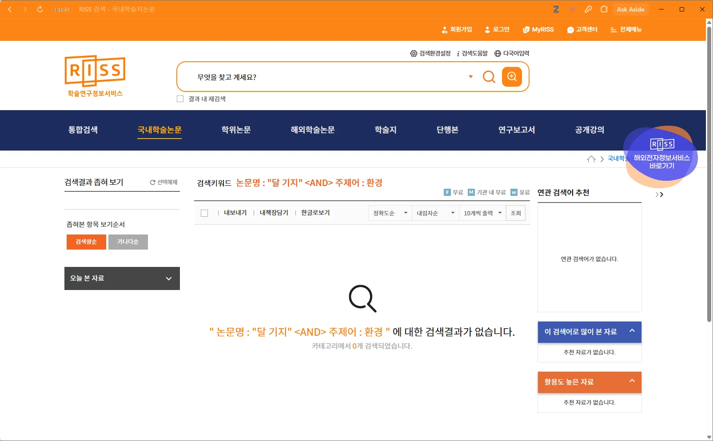
- 논문명 "달 기지" AND 주제어 환경으로 검색
- 검색결과가 없습니다
확대 보기: 검색 조건과 0건 안내
- 띄어쓴 구문 "달 기지"가 검색 조건이다
- 검색결과가 없습니다
- 카테고리에서 0개 검색되었습니다
이 0건을 '띄어쓰기 때문'이라고 단정할 수는 없다. 14건이 나온 검색(논문명 달기지 AND 주제어 건설)과는 띄어쓰기와 주제어가 함께 다르다. 원인을 가르려면 같은 주제어에서 띄어쓰기만 바꾼 대조 검색이 필요하다.
실무 원칙은 단순하다. 표기가 갈릴 수 있는 말은 두 가지를 모두 OR로 묶는다. 예를 들면 달기지 OR "달 기지"이다. 영문의 하이픈이나 철자 차이(영국식과 미국식)에도 같은 원칙을 적용한다.
데이터베이스 선택
RISS는 국내 학술논문, 학위논문, 연구보고서, 단행본 등을 한 화면에서 보여 주는 통합 검색 서비스이다(2026-10-13 통합검색 화면에서 확인). 학술지 수록의 완전성과 색인 범위는 확인하지 못했다. 원문 제공처가 DBpia, KISTI, KISS 등으로 갈린다는 점(3.6)에서 서지를 모아 보여 주는 성격임을 짐작할 수 있다. Web of Science는 국외 학술지 중심의 서지·인용 DB이며, 시연은 경상국립대 기관 인증으로 접속했다.
| 항목 | RISS | Web of Science | 분야 DB·회색문헌 |
|---|---|---|---|
| 성격 | 국내 자료를 모아 보여 주는 통합 검색 | 국외 학술지 중심 서지·인용 DB | 학회 발표, 기술보고서 등 |
| 기록할 것 | 자료 유형 선택, 검색 필드 | 색인(Editions)과 수록 연도 | 출처 이름과 접근 방법 |
회색문헌은 DB 검색만으로는 잘 잡히지 않는다. 기관 보고서 저장소, 학회 발표 자료집, 학위논문 서비스처럼 따로 찾을 출처가 있고, 찾은 방법과 접근하지 못한 곳을 검색 기록에 남긴다. 공학·건축 주제에서는 기술보고서와 학술대회 논문이 중요한 근거일 수 있으므로, 제2장의 포함 유형(학술대회 전문 논문, 학위논문, 기술보고서, 기준문서)과 검색 출처가 맞는지 여기서 다시 확인한다. 시연은 두 DB만 다루지만 이것이 충분하다는 뜻은 아니다.
Web of Science의 하위 색인(Editions)과 수록 연도는 기관 구독에 따라 다를 수 있다. 화면에는 Editions: All이 표시되었지만 그 범위는 기관마다 다를 수 있으므로, 색인과 연도를 검색 기록에 적고 고른 DB와 이유는 프로토콜에 적는다.
RISS 검색 따라하기
이 절은 RISS 화면을 따라 하는 사용법 시연이다. 먼저 전체 흐름을 한눈에 본다.
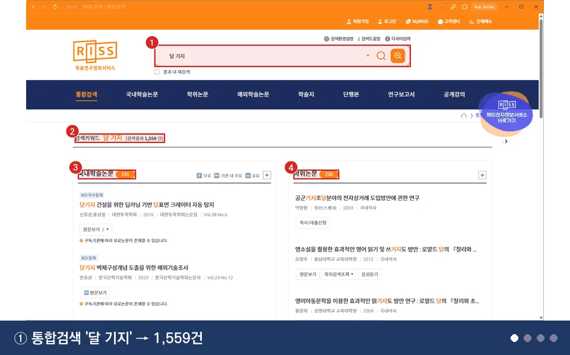
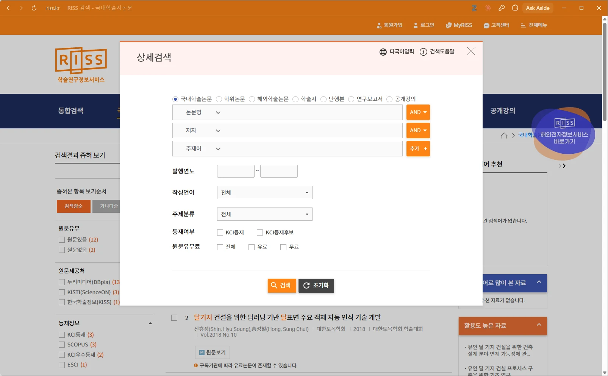
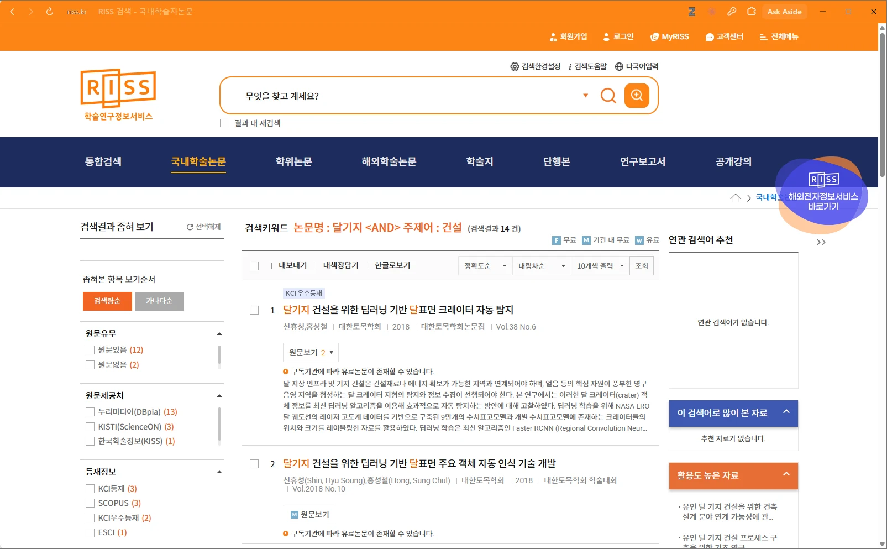
통합검색은 자료 유형별 건수를 보여 준다. 국내학술논문 191건, 학위논문 230건이고 해외학술논문 1건, 단행본 1,090건, 연구보고서 47건이 있다(2026-10-13 촬영 시점). 넓게 훑기에는 좋지만 학위논문 결과의 공군기지처럼 잡음이 보여 정밀도가 낮다.
확대 보기: 자료 유형별 건수와 학위논문 결과 일부
- 국내학술논문 191건
- 학위논문 230건
- 학위논문 결과에 공군기지 같은 잡음이 보인다
- 검색키워드와 전체 건수
상세검색 팝업에서는 자료 유형을 먼저 고르고, 논문명·저자·주제어처럼 필드마다 따로 입력해 AND 버튼으로 잇는다. 같은 팝업의 발행연도, 작성언어, 주제분류, 등재여부, 원문 유무료 같은 세부 조건은 두 종류이다. 발행연도·작성언어·자료 유형처럼 포함 기준과 연결된 조건은 프로토콜에 이유를 적은 경우에만 쓰고 검색 기록의 필터 칸에 적는다. 원문 유무·등재 여부처럼 접근성이나 학술지 지위로 거르는 조건은 쓰지 않는다(3.7의 Open Access 경고와 같은 이유).
- 자료 유형에서 국내학술논문 선택
- 논문명·저자·주제어 입력 행과 AND
- 발행연도, 작성언어, 주제분류
- 등재여부, 원문유무료
- 검색 버튼
확대 보기: 입력 행과 버튼
- 자료 유형을 먼저 고른다
- 필드마다 따로 입력한다
- AND 버튼으로 행을 잇는다
- 검색 버튼으로 실행한다
논문명 달기지와 주제어 건설로 검색하면 14건(2026-10-13 촬영 시점)이 나왔다. 이 시연식은 사용법을 보이기 위한 것이며 연구질문의 개념 블록과 다르다. 왼쪽 필터에는 원문 유무, 원문 제공처, 등재 정보별 건수가 보인다.
- 검색 조건과 결과 14건
- 원문유무 필터
- 원문제공처 필터
- 등재정보 필터
- 내보내기 버튼
확대 보기: 왼쪽 필터
- 원문있음 12, 원문없음 2
- 누리미디어(DBpia) 13, KISTI 3, KISS 1
- KCI등재 3, SCOPUS 3, KCI우수등재 2, ESCI 1
필터 건수의 합은 14와 맞지 않는 곳이 있다. 원문 제공처는 13+3+1=17로 14보다 크며, 한 논문이 여러 제공처에 겹쳐 집계되기 때문으로 보인다. 등재정보는 화면에 보이는 항목의 합이 3+3+2+1=9로 14보다 작다. 목록이 스크롤 영역일 수 있으므로 전체 항목은 화면에서 확인한다. 이 필터는 결과를 이해하기 위한 정보일 뿐 결과를 줄이는 데 쓰지 않는다. RISS의 절단 기호·괄호 처리는 확인하지 못했으므로 짧은 식으로 시험해 본다.
Web of Science 검색 따라하기
Web of Science는 고급검색 화면에서 필드 태그를 쓰는 검색식을 한 줄로 입력한다. 시연은 경상국립대 기관 인증으로 로그인 없이 진행했다.
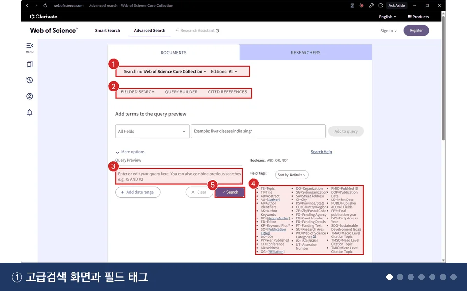
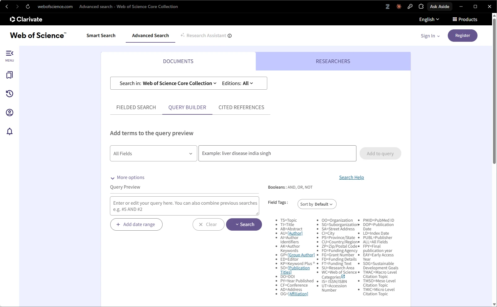
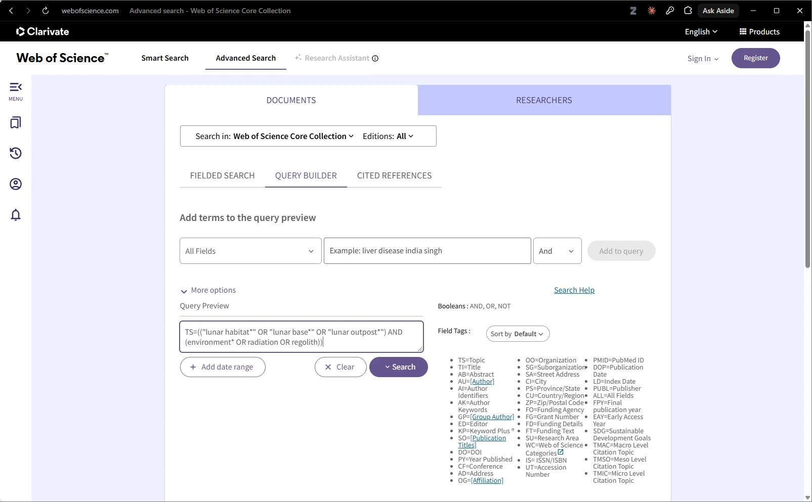
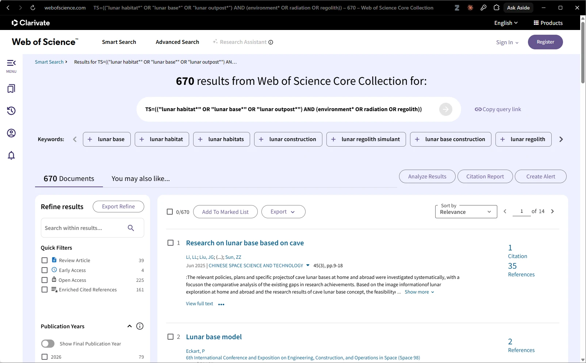
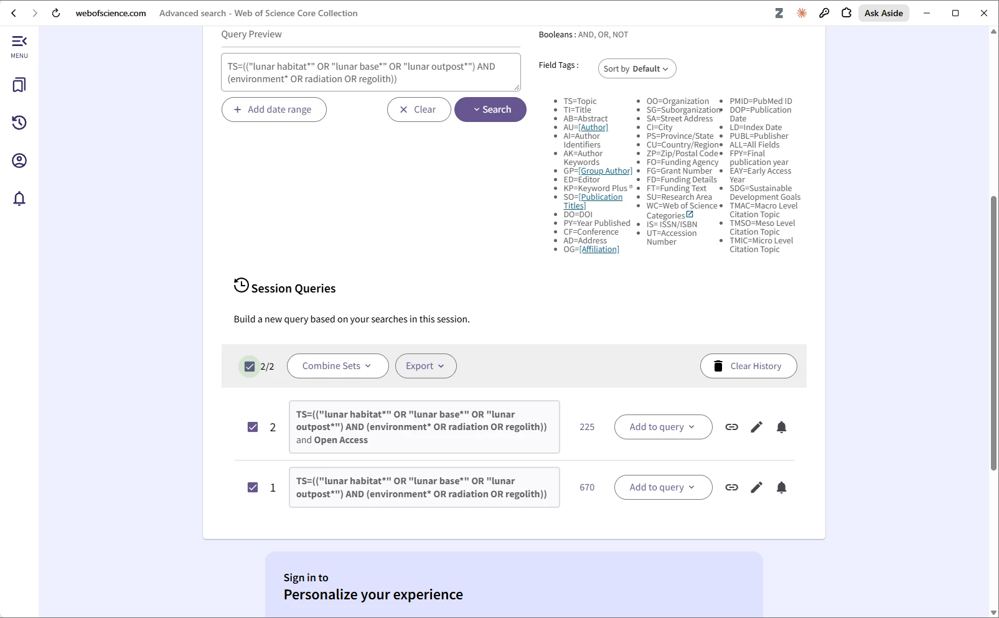
- 검색 대상 Core Collection, Editions All
- 탭 Fielded Search, Query Builder, Cited References
- 검색식 입력창 (Query Preview)
- 필드 태그 목록
- Search 버튼
확대 보기: 필드 태그와 불리언 안내
- TS=Topic
- TI=Title
- Booleans: AND, OR, NOT
입력한 검색식은 3.2의 개념 블록을 옮긴 것이며 괄호와 따옴표가 모두 들어 있다.
TS=(("lunar habitat*" OR "lunar base*" OR "lunar outpost*") AND (environment* OR radiation OR regolith))
확대 보기: 검색식 입력창
- TS=(("lunar habitat*" OR "lunar base*" OR "lunar outpost*") AND (environment* OR radiation OR regolith))
- Search 버튼
실행하면 2026-10-13 촬영 시점에 670건이 나왔다. 따옴표 안의 *와 연산자 우선순위는 공식 도움말에서 확인하지 못했으므로, 식이 어떻게 해석되었는지는 결과 화면에 표시된 검색식으로 확인한다.
- 670 results
- 실행된 검색식
- Quick Filters
- Export 버튼
확대 보기: Quick Filters
- Review Article 39
- Early Access 4
- Open Access 225
Review Article 39건(2026-10-13 촬영 시점)은 기존 고찰을 찾는 단서로 쓸 수 있다(제2장). Open Access 225건은 아래 경고를 먼저 읽는다.
화면에서 필터는 체크만으로는 적용되지 않고 Refine 버튼을 눌러야 적용된다(2026-10 화면 기준).
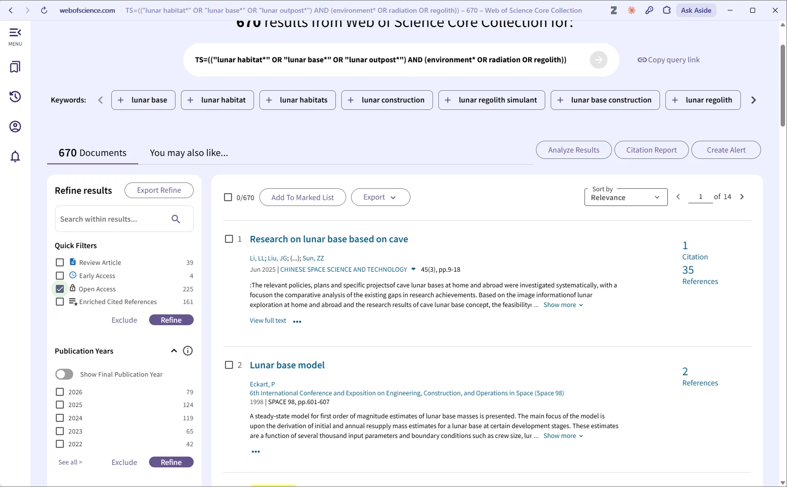
- Open Access 체크
- Refine 버튼
검색 이력(Session Queries)에는 검색이 세트 번호와 건수로 쌓인다. 시연에서는 세트 1이 670건(원래 검색), 세트 2가 필터를 더한 225건의 시연용 검색이었다(2026-10-13 촬영 시점). 기록에 쓰는 것은 필터 없는 세트 1이다.
- Session Queries
- 세트 2개 선택, Combine Sets
- 세트 2: 225건
- 세트 1: 670건
검색 기록
검색은 그날 바로 적는다. DB, 플랫폼, 검색일, 검색자, 검색식 전문, 필터·제한, 수록 색인·연도, 건수, 내보낸 건수가 있으면 검색을 다시 실행해 확인할 수 있다. 다만 DB는 갱신되므로 건수는 달라질 수 있고, 기록이 편향을 없애 주지는 않는다.
| DB | 플랫폼 | 검색일 | 검색자 | 검색식 | 필터·제한 | 수록 색인·연도 | 건수 | 내보낸 건수 |
|---|---|---|---|---|---|---|---|---|
| RISS | RISS 웹 상세검색 | 2026-10-13 | — | 논문명 달기지 AND 주제어 건설 (사용법 시연용, 개념 블록과 다름. 흐름도 식별 건수에 쓰지 않음) | 자료 유형: 국내학술논문 선택 | 확인하지 못함 | 14 | — (시연: 내보내기 안 함) |
| Web of Science | Clarivate 고급검색 (경상국립대 기관 인증) | 2026-10-13 | — | TS=(("lunar habitat*" OR "lunar base*" OR "lunar outpost*") AND (environment* OR radiation OR regolith)) | 없음 | Core Collection, Editions: All (수록 연도는 화면에서 확인해 적는다) | 670 | — (시연: 내보내기 안 함) |
검색 기록은 독자가 같은 검색을 다시 해 볼 수 있게 하고, 연구자 자신이 "무엇을 어디서 찾았는가"를 되짚게 한다. 흐름도의 식별 건수에는 연구질문의 검색식으로 실행한 DB별 건수만 쓴다. 시연의 RISS 행은 사용법 연습 값이므로 이 표를 그대로 실제 연구의 검색 기록이나 흐름도로 옮기면 안 된다. 제5장의 흐름도 입력기에는 입력 방법을 보이려는 시연값으로만 14와 670을 넣는다. 선별에 쓰는 값은 실제 연구에서 개념 블록으로 다시 검색해 얻는다.
검색 보고의 확장 지침으로 PRISMA-S가 있다(Rethlefsen et al., 2021). 검색식은 동료 검토를 받고(PRESS), 검색을 갱신했다면 마지막 검색일을 보고서에 적는다.
| 용어 | 정의 |
|---|---|
| 개념 블록 | 연구질문에서 뽑은 개념 하나를 가리키는 말들을 OR로 묶은 덩어리 |
| 동의어 확장 | 같은 개념을 가리키는 다른 말과 표기 변형을 검색식에 보태는 일 |
| 민감도 | 관련 문헌을 놓치지 않고 찾아내는 정도. 체계적 검색에서 먼저 높인다 |
| 정밀도 | 검색 결과 가운데 관련 문헌이 차지하는 비율 |
| 불리언 연산자 | AND, OR, NOT. AND는 줄이거나 같고 OR는 늘리거나 같다 |
| 절단어 | *로 어근 뒤를 대신하는 표기. 0개 이상의 문자에 해당한다 |
| 구문 검색 | 따옴표로 묶어 순서대로 이웃한 단어를 찾는 방식 |
| 필드 태그 | 검색할 필드를 정하는 표기(예: TS=, TI=). DB마다 다르다 |
| 회색문헌 | 보고서, 학위논문, 학술대회 자료처럼 상업 출판 밖에서 나온 자료 |
| 검색 기록 | DB, 플랫폼, 검색일, 검색자, 검색식, 필터, 색인·연도, 건수, 내보낸 건수를 적은 표 |
- 검색은 놓치지 않는 것(민감도)을 먼저 겨냥하고, 잡음은 선별에서 걸러 낸다. 1,559건과 14건 비교는 조건을 여러 개 동시에 바꾼 것이라 인과를 말할 수 없다.
- 검색식은 개념 블록에서 나온다. 같은 개념은 OR, 다른 개념은 AND로 잇고 OR 묶음은 괄호로 감싸며, 핵심 문헌 몇 편이 결과에 들어 있는지 간단히 점검한다.
- 띄어쓰기와 표기도 결과를 바꿀 수 있으므로 두 표기를 OR로 묶고, DB 동작은 화면에서 시험해 확인한다.
- Open Access 같은 필터로 결과를 줄이지 않으며, 검색 기록에는 DB·플랫폼·검색일·검색자·식 전문·필터·색인과 연도·건수를 적는다. 흐름도의 식별 건수에는 연구질문의 검색식으로 실행한 DB별 건수만 쓰고, RISS 14건은 사용법 연습 값이다.
참고문헌
- Higgins, J. P. T., Thomas, J., Chandler, J., Cumpston, M., Li, T., Page, M. J., & Welch, V. A. (Eds.). (2024). Cochrane handbook for systematic reviews of interventions (Version 6.5). Cochrane. https://www.cochrane.org/handbook
- McGowan, J., Sampson, M., Salzwedel, D. M., Cogo, E., Foerster, V., & Lefebvre, C. (2016). PRESS Peer Review of Electronic Search Strategies: 2015 guideline statement. Journal of Clinical Epidemiology, 75, 40-46. https://doi.org/10.1016/j.jclinepi.2016.01.021
- Page, M. J., McKenzie, J. E., Bossuyt, P. M., Boutron, I., Hoffmann, T. C., Mulrow, C. D., Shamseer, L., Tetzlaff, J. M., Akl, E. A., Brennan, S. E., Chou, R., Glanville, J., Grimshaw, J. M., Hróbjartsson, A., Lalu, M. M., Li, T., Loder, E. W., Mayo-Wilson, E., McDonald, S., . . . Moher, D. (2021a). The PRISMA 2020 statement: An updated guideline for reporting systematic reviews. BMJ, 372, Article n71. https://doi.org/10.1136/bmj.n71
- Rethlefsen, M. L., Kirtley, S., Waffenschmidt, S., Ayala, A. P., Moher, D., Page, M. J., Koffel, J. B., & PRISMA-S Group. (2021). PRISMA-S: An extension to the PRISMA statement for reporting literature searches in systematic reviews. Systematic Reviews, 10, Article 39. https://doi.org/10.1186/s13643-020-01542-z